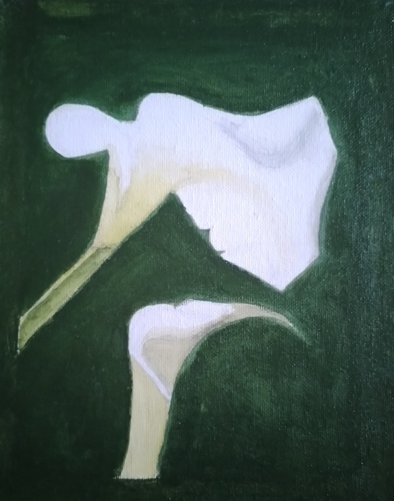
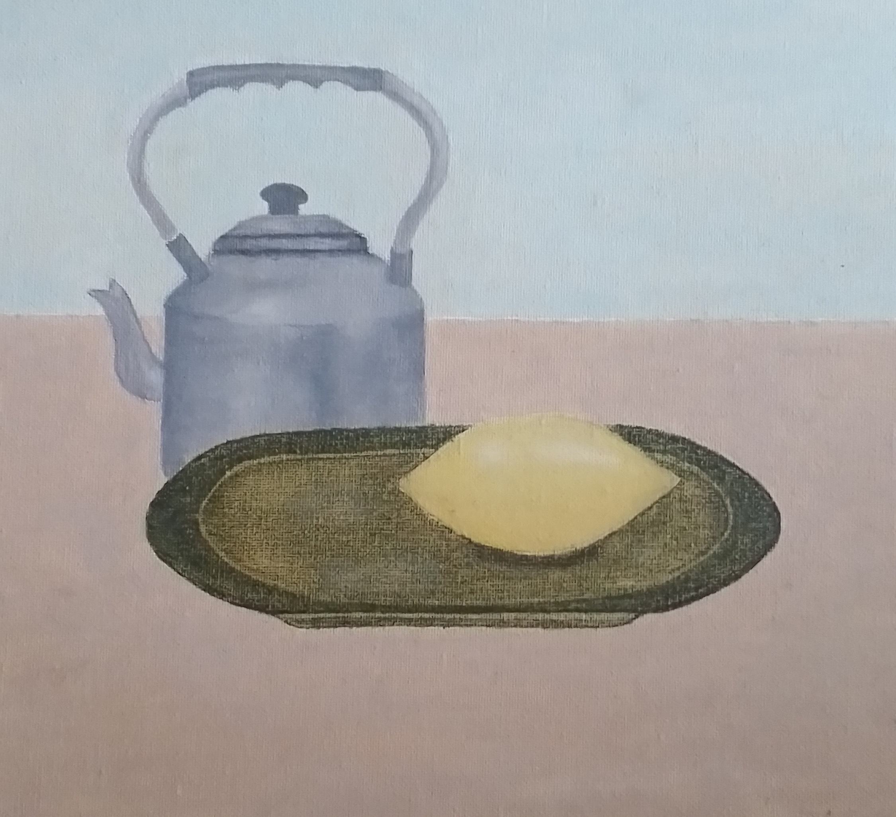
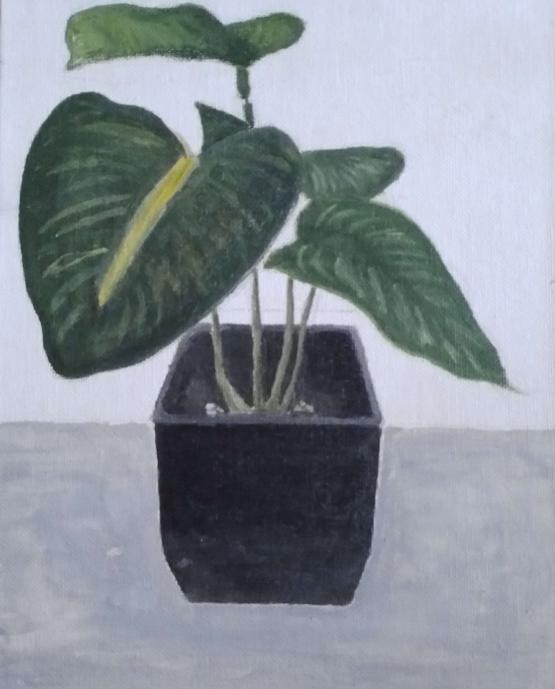
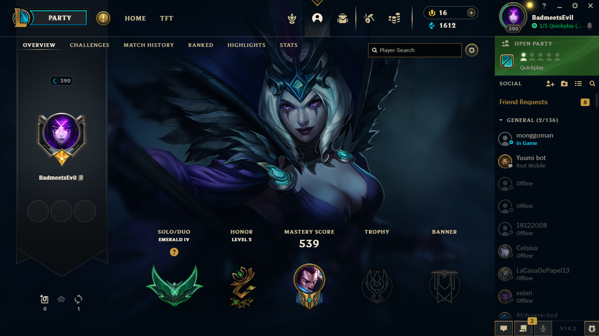
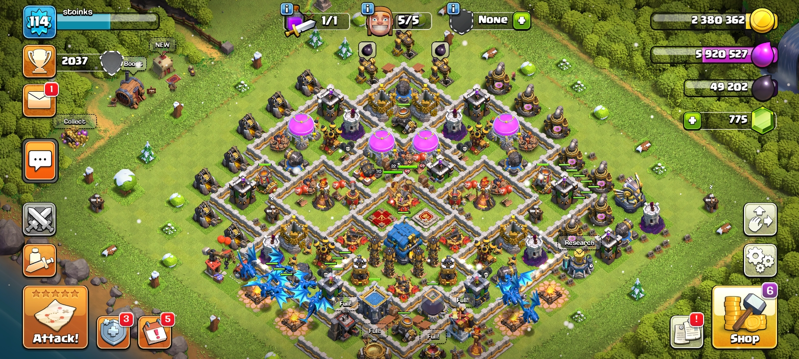

Introduction
Hello everyone! I'm Aljon F. Ferrancol and welcome to my beautiful mess portfolio website. I'm a third-year college student at Cavite State University Bacoor Campus, taking the program of Bachelor of Science in Information Technology.
Motto
"Live life to the fullest because you only live once"
About Myself
I'm Aljon Fabregas Ferrancol, hail from the vibrant Imus City, Cavite, a place that instilled in me the values of resilience, community, and an appreciation. The rich tapestry of my cultural heritage has colored my worldview, fostering a deep respect for diversity and an understanding that every story contributes to the beauty of the whole. In the pursuit of knowledge, I ventured into academic life, a chapter that not only equipped me with new knowledge but also fostered a love for technology.
Family is the cornerstone of my life. The bonds forged most of my life have shaped my character, teaching me the significance of empathy, resilience, and shared laughter. They are the pillars that support me in both triumphs and challenges.
In the art rooms, I found my sanctuary. Each stroke of the brush became a brushstroke in the canvas of my academic life years ago, narrating tales of discovery and artistic exploration. From the initial doodles that adorned the margins of my notebooks to the meticulously planned pieces for school exhibitions, my journey in the world of paintings unfolded within these cherished halls.
My Hobbies



Canva Paintings
Painting is not just an artistic endeavor; it's a playground where creativity knows no bounds. Whether experimenting with different techniques, exploring various styles, or embracing the unpredictable nature of mixed media, I find joy in the process of creation, where every canvas is a new adventure waiting to unfold.


Video Games
As an avid gamer, my journey is not just about achieving high scores or completing quests; it's a narrative of exploration, strategy, and the endless possibilities that unfold within virtual realms. From the pixelated landscapes of retro classics to the intricately detailed environments of modern masterpieces, each game I've encountered has left an indelible mark on my imagination.